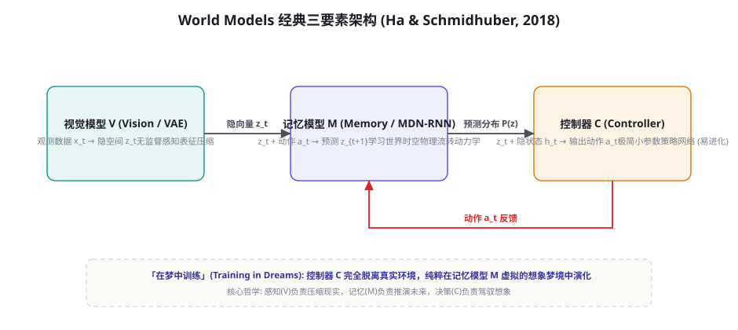
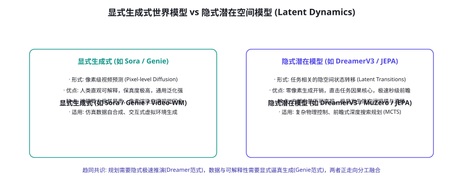

World Models：Agent 的世界理解与想象
人类智能最显著的特质之一，是在采取行动之前，能够在脑海中预演未来可能的物理演化与因果涟漪——我们在「思想的沙盘」中演练千百次，才在真实世界中落下一子。如果智能体仅仅依赖自回归的当前 token 概率预测，它就永远是一个被动应对环境的无头苍蝇。世界模型（World Models）正是赋予智能体「想象力与前瞻性推演」的理论与工程高地。本章将系统梳理从 Ha & Schmidhuber 的奠基开山，到 DreamerV3 隐式潜在空间动力学，再到 Sora / Genie 等生成式扩散世界模型的前沿爆发，解构智能体如何构建对外部世界的因果图谱与内心投影。
经典范式：Ha & Schmidhuber 的三要素架构

2018 年，David Ha 与人工智能先驱 Jürgen Schmidhuber 提出了里程碑式的经典世界模型架构，首次将认知科学中人类大脑的感知压缩与前瞻预测机制用深度学习精确解构为三大互相咬合的核心组件：
第一组件：视觉模型 V（Vision Model，基于 VAE）。现实世界的原始观测（如高分辨率像素矩阵）充满了与决策无关的高频噪声与视觉冗余。V 模型的使命是充当「感官漏斗」：通过变分自编码器（VAE），将高维的物理观测像素 $x_t$ 极速压缩为一个低维、高密度的紧凑连续隐空间向量 $z_t$。这相当于人脑视网膜与初级视觉皮层对现实的抽象表征抽取。
第二组件：记忆模型 M（Memory RNN，基于 MDN-RNN）。这是世界模型真正的心脏。记忆模型并不关心当前应该采取什么决策，它的唯一天职是学习外部世界的因果流转动力学（Physics of the World）。它接收当前时刻的隐向量 $z_t$ 与施加的物理动作 $a_t$，结合自身的长时记忆隐状态 $h_t$，输出未来下一个状态的概率混合高斯分布 $P(z_{t+1})$。M 模型实质上在神经网络内部搭建起了一台虚拟的环境物理引擎。
第三组件：控制器 C（Controller）。控制器是极其精简紧凑的线性或小参数策略网络。它仅接收由 V 提取的当前现实 $z_t$ 以及由 M 维护的历史隐状态 $h_t$，映射输出具体动作 $a_t$。由于 V 和 M 已经替控制器消化了全部的视觉解析与时空推演重担，控制器 C 的参数规模极小，甚至不需要反向传播，仅通过无导数的遗传算法（CMA-ES）就能以极高的采样效率完成快速进化。
「在梦境中训练」（Training inside the Dream）：该架构最震撼的创举在于，一旦 V 和 M 充分学习了环境特征，控制器 C 可以在完全关闭真实物理环境的情况下，纯粹在 M 模型虚拟的幻觉时空中与记忆进行交互试错。这种「零现实风险、零硬件损耗、无限并发提速」的训练范式，为后续所有 Model-based RL 奠定了哲学基石。
因果推理与反事实推演：世界模型的最高阶形态
统计相关性与因果本质之间隔着一道巨大的鸿沟。传统大模型经常犯下「公鸡打鸣所以太阳升起」的关联性荒谬错误。真正合格的世界模型必须跨越 Judea Pearl 著名的「因果关系之梯」（Ladder of Causation）的三层境界：
第一级：关联（Association，观测 $P(y|x)$）。这是绝大多数单纯依靠自回归自监督预训练的 LLM 所处的阶段。模型看到云层密集就预测可能下雨，看到某段报错信息就尝试关联某段历史 StackOverflow 补丁。它仅仅回答「看到 A，B 发生的概率有多大」，完全缺乏对底层因果机制的介入理解。
第二级：干预（Intervention，主动动作 $P(y| ext{do}(x))$）。这是具身智能与交互式世界模型的入场券。当智能体施加物理动作（$ ext{do}(x)$）——例如主动按下开关、在终端执行 kill -9 或机械臂推倒积木时，它不再是被动的环境旁观者，而是在主动改变环境的概率分布。世界模型必须精确回答：「如果我强制执行动作 $a$，系统动力学将走向何方？」
第三级：反事实（Counterfactuals，回顾推演 $P(y_{x'} | x, y)$）。这是人类高级反思与事故归因的核心支柱。在长时程任务失败后，智能体必须能够回溯到过去的某一个分岔点，提出假设性质问：「如果我在第 10 步没有修改核心配置 A，而是采用了备选策略 B，现在的服务宕机还会发生吗？」具备反事实推演能力的世界模型，是终结暴力试错、实现高样本效率学习的终极引擎（第 45 节失败轨迹炼金术与第 49 节自我博弈的理论归宿）。
两条路线：隐式潜在动力学 vs 显式生成式世界模型

随着大模型与扩散技术的爆发，世界模型的演进分化出了两条哲学截然相反的技术路线：
| 核心维度 | 显式生成式世界模型 (Generative World Models) | 隐式潜在世界模型 (Latent Dynamics Models) |
|---|---|---|
| 代表工作 | OpenAI Sora, Google Genie 1/2, Wayve GAIA-1 | Danijar Hafner DreamerV1-V3, DeepMind MuZero, Yann LeCun JEPA |
| 建模对象 | 物理屏幕的像素级视频帧 (Pixel-level Diffusion) | 任务强相关的紧凑潜变量空间 (Latent State $z_t$) |
| 推演开销 | 极其昂贵（每预测一秒需要数次扩散去噪迭代） | 极度轻量（矩阵乘法秒级前瞻数十步） |
| 可解释性 | 极佳（人类可直接以肉眼视频形式审查推演过程） | 极差（纯黑盒向量表示，不可直视） |
| 核心价值 | 数据工厂：自合成无限的物理/交互训练样本 | 决策引擎：支持毫秒级的 MCTS 树搜索与前瞻规划 |
| 典型缺陷 | 物理因果易发生「穿模」与空间常识幻觉 | 隐空间极易坍塌（Representation Collapse）与漂移 |
图灵奖得主 Yann LeCun 近年来反复强调：试图直接预测每一个未来像素的世界模型（如基于自回归或纯视频扩散的路线）在本质上是低效且错误的。其核心论据在于物理世界充满了无法预测的无关高熵细节：比如微风吹拂下树叶的每一丝抖动、水面上每一朵随机的涟漪、电视机屏幕里的雪花点。要求模型把每一个微观像素都精准还原，会浪费 99% 的参数容量去记忆不可预测的随机噪声。LeCun 提出的联合嵌入预测架构（JEPA）主张：只在抽象的表征空间中进行预测，彻底丢弃无法预测的非本质信息。这与 DeepMind 的 MuZero 和 DreamerV3 不谋而合——真正强大的世界模型，不需要成为能拍电影的摄像机，而应是一台洞察事物核心因果齿轮的抽象逻辑机。
DreamerV3 范式：纯潜在空间演进的工程奇迹
在隐式世界模型阵营中，Danijar Hafner 等人提出的 DreamerV3（Nature 2023, arXiv:2301.04104）代表了现代 Model-based RL 的工程巅峰。它是历史上第一个在完全没有人类先验、没有调整超参数的情况下，直接在 Minecraft（我的世界）中仅凭像素输入从零自主挖出钻石的通用算法体系：
第一技术核心：递归状态空间模型（RSSM, Recurrent State-Space Model）。Dreamer 将世界状态分解为两部分结合体：确定的循环状态（Deterministic Path，$h_t = \text{GRU}(h_{t-1}, z_{t-1}, a_{t-1})$）与随机的离散潜在状态（Stochastic Path，$z_t \sim P(z_t | h_t)$）。通过引入分类分布（Categorical Latents）替代传统连续高斯分布，彻底消除了由于方差爆炸带来的数值不稳定，使模型能够精确刻画物理世界中「要么发生、要么不发生」的非连续突变事件（如方块被敲碎的瞬间）。
第二技术核心：对称 KL 正则化与自适应自由位（Free Bits）。为了防止模型在复杂环境中将表征直接退化坍塌为平凡解，Dreamer 引入了平衡双向 KL 约束，确保世界模型的先验预测分布（Prior）与后验观测分布（Posterior）保持动态张力，使潜变量空间始终充满对环境变化的敏感感知度。
第三技术核心：无缩放损失（Symlog 变换与固定超参数）。在工业应用中，最令人头疼的是奖励信号尺度的剧烈分化（某些任务奖励为 0.01，某些任务得分高达 10000）。DreamerV3 创造性地提出了对称对数变换（$\text{symlog}(x) = \text{sign}(x) \ln(|x| + 1)$），对所有输入、隐表征、预测奖励与价值网络进行统一尺度的归一化压缩。一套固定的超参数可以不加微调地横跨雅达利游戏、机械臂高精连续控制、自动驾驶仿真以及 Minecraft 开放探索，树立了工业级世界模型的健壮性标杆。
世界模型的训练技巧与工程防崩指南
训练一个高精度的潜在动力学模型极易遭遇数值崩溃、梯度弥散与模式坍塌。在实际工程落地中，必须配备三套关键训练手艺：
第一手艺：多步前瞻损失（Multi-step Rollout Loss）。绝不能仅仅训练「给定 $t$，预测 $t+1$」的单步损失！因为在自回归单步目标下，模型倾向于走捷径，只学习惯性微调（如预测下一帧与当前帧几乎一致），导致展开到第 5 步时彻底失去时空动力学感知。工业级标准做法是强制在潜在空间中无监督自循环展开 $K$ 步（通常 $K=5\sim 15$），并在每一展开步上联合计算对比损失或重构损失，迫使模型内化长期时空相干性。
第二手艺：表征信息瓶颈与自监督对比正则（InfoNCE Regularization）。为了防止潜在状态 $z$ 悄悄把未来的答案在当前隐状态中做无意义的直接记忆，必须引入信息瓶颈（Information Bottleneck）理论：最小化当前观测向隐状态注入的非必要互信息 $I(X; Z)$，同时最大化隐状态对未来关键任务奖励的预测互信息 $I(Z; Y)$。这在数学上保证了潜在空间既高度精炼，又具备极致的因果敏感度。
第三手艺：在线异步探索与模型动态更新（Decoupled Agent Architecture）。由于世界模型训练需要大量的环境轨迹样本，必须采用「演员（Actor）收集轨迹与学习器（Learner）更新世界模型」异步解耦的双进程架构。演员使用当前的轻量策略在真实或沙箱环境中批量采集交互数据并注入共享经验池；后端的重型 GPU 专职拟合最新的物理转移参数，并定期将更新后的世界模型权重下发。这种流水线解耦将数据吞吐与模型容量的匹配效率提升了数十倍。
大语言模型内部的隐式世界模型与因果推演
除了专门训练的视觉物理世界模型，纯文本大模型（LLMs）内部是否也自发演化出了对现实世界的物理与空间认知？近年来可解释性与因果分析研究给出了确凿证据：
① 空间与时间几何表征的自发涌现。通过线性探针（Linear Probes）检测 Llama 和 GPT 模型的中间激活层，研究人员发现隐藏状态中存在极其清晰的高维空间流形：模型不仅自发构建了关于全球城市经纬度的二维拓扑投影图，还在线性维度上严格编码了历史年代的时序连续流动。模型并非在生硬背诵文本距离，而是在其注意力深处内化了一套连续的虚拟世界时空坐标系。
② 黑白棋与棋盘状态的神经电路。在著名的 Othello-GPT 实验中，模型仅通过学习历史棋局的着子走法序列（如 "E3, D3, C4..."），在从未被告知棋盘规则的情况下，其中间层自发演变出了一个 8x8 的棋盘布尔状态矩阵电路。当研究人员人为通过激活干预（Activation Patching）翻转其内部某个虚拟棋子的颜色时，模型后续预测的合法走子分布立刻发生了符合规则的完全同步转移。这雄辩地证明：即使没有物理实体，充分规模的自回归预测任务也会迫使神经网络自组织出隐式世界模型。
在企业级长时程运维或高危业务 Agent 中，直接让模型盲调 API 极易引发第 60 章警告的灾难性副作用。最佳实践是构建「规则驱动的轻量世界模型探针」（In-Memory World Sandbox）：在执行任何高危写操作（如更新 Kubernetes 配置或修改账务数据库）之前，调度器强制调用内部维护的环境状态转移方程，在内存中前瞻推演接下来 3 步的虚拟状态变化。若推演结果显示「服务 Pod 存活率将掉至 0」或「数据库连接池将耗尽」，该前瞻结果立即作为显式反思输入注入当前 Agent（「警告：若执行此命令，世界模型预测 30 秒后将发生级联宕机，请重新规划」）。将事故阻断在想象之中，是世界模型赋能安全工程的最直接落地形态。
轻量级潜在状态预测器核心实现
下面给出一个基于 PyTorch 的微型 RSSM 潜在空间动力学预测核心骨架，展示世界模型是如何在内部完成「观测压缩-隐空间状态推进-奖励前瞻」闭环的：
import torch
import torch.nn as nn
import torch.nn.functional as F
class MiniRSSMCell(nn.Module):
"""递归状态空间模型动力学核心单元 (结合确定性 GRU 与随机隐状态)"""
def __init__(self, action_dim=4, deter_dim=256, stoch_dim=32):
super().__init__()
self.deter_dim = deter_dim
self.stoch_dim = stoch_dim
# 1. 确定性循环路径: 结合上一时刻确定状态 h_{t-1}, 随机状态 z_{t-1} 与动作 a_{t-1}
self.gru_cell = nn.GRUCell(stoch_dim + action_dim, deter_dim)
# 2. 先验网络 (Prior): 仅凭历史脑内推演，预测下一刻隐状态分布
self.prior_net = nn.Sequential(
nn.Linear(deter_dim, 128),
nn.ReLU(),
nn.Linear(128, stoch_dim * 2) # 输出均值与方差
)
# 3. 奖励预测器: 基于隐空间状态预测可能获得的奖惩
self.reward_predictor = nn.Sequential(
nn.Linear(deter_dim + stoch_dim, 64),
nn.ReLU(),
nn.Linear(64, 1)
)
def forward_prior(self, prev_deter, prev_stoch, action):
"""完全在想象中演进未来一步 (脑内试错前瞻)"""
# 计算下一步确定性状态 h_t
x = torch.cat([prev_stoch, action], dim=-1)
deter = self.gru_cell(x, prev_deter)
# 预测下一步随机隐状态分布参数
stats = self.prior_net(deter)
mean, std = torch.chunk(stats, 2, dim=-1)
std = F.softplus(std) + 0.1
# 重参数化采样得出想象中的 z_t
epsilon = torch.randn_like(std)
stoch = mean + std * epsilon
# 前瞻预测该状态下的奖励
pred_reward = self.reward_predictor(torch.cat([deter, stoch], dim=-1))
return deter, stoch, pred_reward
# 模拟智能体在脑海中前瞻推演 3 步未来:
cell = MiniRSSMCell()
h_0 = torch.zeros(1, 256)
z_0 = torch.zeros(1, 32)
planned_actions = [torch.randn(1, 4) for _ in range(3)]
print("=== 开始在潜在世界模型中进行未来推演 ===")
curr_h, curr_z = h_0, z_0
for step, act in enumerate(planned_actions):
curr_h, curr_z, r = cell.forward_prior(curr_h, curr_z, act)
print(f"前瞻预测第 {step+1} 步 -> 预期环境奖励: {r.item():.4f}")这段精悍的架构揭示了前瞻规划的终极奥义：智能体不需要每一步都向现实环境索要昂贵的像素帧反馈，通过在低维隐空间中执行纯数学运算，数十步的未来展开可在数毫秒内完成。配合 MCTS 蒙特卡洛树搜索，智能体能够以极高的采样效率探索所有候选分支，选出期望奖励最优的路径下发至真实物理执行层。
关于「世界模型与大模型规划器（Planner）的协同架构」：在前沿工程中，世界模型通常不单独直接面向用户交付，而是作为核心规划器底层的「前瞻沙盘插件」（Lookahead Simulator Plugin）运行。以经典的 MCTS（蒙特卡洛树搜索，第 93 章）或 Beam Search 为例，大语言模型每产生一个候选行动意图（如「方案 A：修改 Nginx 转发规则」与「方案 B：重启后端上游集群」），调度器并不会鲁莽地下发执行，而是将当前系统的抽象状态与候选行动打包，交给内部世界模型发起数十条并行的前瞻模拟仿真链（Rollouts）。世界模型在毫秒级内返回推演报告（「方案 A 产生网络中断概率为 2%，方案 B 将引发持续 15 秒的连接重置」）。规划器据此为不同候选路径打上精准的因果价值评分，选出期望风险最小的路径下发。这种将「大模型的创造性发散」与「世界模型的严密物理收敛」紧密咬合的双核驱动体系，正在彻底重塑高危复杂工程的自动化天花板。
补充一个极具实战指导意义的工程判据：领域仿真度与世界模型复杂度的黄金配比法则。在落地具体业务时，研发团队必须首先审计目标环境的确定性程度。如果面对的是像国际象棋、电路逻辑、编译器语法这样具备完全信息的闭式系统，显式规则引擎或状态转移图就是最完美、零幻觉的世界模型，强行引入神经网络潜在动力学反而会引入不必要的概率噪声；只有当环境充满连续物理噪声、非完全观测（POMDP）或者人类行为博弈等无法显式写出微分方程的开放场景时，深度世界模型（如 RSSM 或扩散模型）才能释放出碾压式的表征力量。分清「何时用规则、何时用神经」，是世界模型架构师最成熟的工程定力。
三个高频疑问
Q：Sora 和视频生成技术这么火，我们能否直接把它们拿来作为自动驾驶或机器人的世界模型？现阶段很难直接作为核心决策引擎，主要面临三大工程鸿沟：① 动作可控性与可微性极弱——视频扩散模型主要面向视觉美学，难以严格服从高频底层控制参数（如精确的转向角 5.2 度或机械臂力矩 3.5Nm）；② 推理延迟呈数量级不可用——控制系统需要 20Hz~100Hz 的响应，而扩散去噪单帧生成需要秒级，根本无法跟上实时环境动态；③ 物理逻辑的虚幻常识崩塌——纯像素模型极易发生物体突然凭空消失、重力反转或多肢体幻觉（第 63 章幻觉在物理像素空间的翻版）。目前的正确工业落地方式是将其定位为「离线仿真数据合成器」（用于扩充小概率长尾事故 Corner Case 的训练集），而不是在线决策引擎。
Q：世界模型是否最终能够彻底解决长时程 Agent（第 76 章）中的探索发散问题？世界模型是解决长程规划的必要条件，但本身并非充分条件。引入世界模型后，系统会面临新的「模型误差复利累积」（Compounding Model Errors）：由于预测未来始终基于历史预测，推演到第 15 步以后，微小的预测偏差会使脑中想象的世界彻底漂移变形。如果智能体深信这份变形的幻觉，就会制定出在现实中灾难性的激进计划。因此，高阶智能体必须具备「不确定性感知」能力——一旦前瞻推演的潜在方差超过置信阈值，立即截断想象树，转而在真实世界中获取新的硬核观测重新校准，实现「大胆想象、谨慎落地」的动态平衡。
Q：纯文本 Agent（如通用对话助手或代码重构助手）内部也需要显式的世界模型吗？非常需要，只是形态有所不同。在文本与软件工程域，世界模型的形态不是物理坐标或三维渲染，而是「因果依赖图谱与执行状态机」（Causal Dependency Graph）：例如代码重构智能体脑中必须维护整个项目的模块依赖拓扑图；金融分析智能体脑中必须维护宏观利率对不同产业链上下游的因果传导网络。缺乏这套隐式因果图谱的 Agent，只能在局部根据字面相似度亦步亦趋；而具备严密因果世界模型的 Agent，能够清晰地预判「如果我修改了 A 函数的入参类型，下游第 4 层的 B 模块将发生隐式溢出」，从而实现真正具备远见的系统级架构重塑。
本章在全书网络中的连接：上游接续第 69 章（具身智能物理环境）与第 70 章（游戏与仿真中的探索闭环），并为第 76 章（长时程任务规划）提供前瞻推演引擎；横向与第 63 章（事实性与幻觉治理——世界模型保真度问题）深度互文；下游通向第 78 章（Agent 经济学与推理开销权衡）及第 97 章（理论篇：世界模型与因果决策的数学形式化）。复习锚点：Ha & Schmidhuber 经典三要素（图 77-1）、显式生成式与隐式潜在世界模型矩阵（表 77-1）、Yann LeCun JEPA 思想核心、DreamerV3 RSSM 动力学原理、微型潜在预测器架构。
本章收尾，把世界模型对通用人工智能（AGI）的深层启示做一次终局性定调：真正的智能从来不是海量静态文本记忆的简单复述，而是生命体为了在充满不确定性的动态宇宙中求存，在内部构建的一套自洽而精密的因果模拟器。从 Ha & Schmidhuber 简朴优雅的 V-M-C 三要素，到 Dreamer 征服复杂物理矿区，再到通用视频扩散模型描摹万千气象，人类正在一步步将真实世界的物理与因果常识沉淀为神经网络内部永不熄灭的神经火种。下一章我们将直面智能体落地的最严酷现实账本——Agent 经济学：成本、延迟与质量的权衡三角。当单次长程推演与世界模型探索涉及上百次调用时，企业该如何算清每一分算力与 Token 的投入产出比？
本章小结
- 世界模型赋予智能体在脑海中「推演未来与因果前瞻」的核心心智，是突破传统被动式自回归响应的必由之路。
- 经典三要素架构：视觉 V 压缩感知、记忆 M 模拟时空物理因果、控制器 C 在自洽梦境中高速演化强化学习。
- 技术两分天下：显式视频扩散模型追求像素级直观仿真（重在数据合成）；隐式潜在动力学（Dreamer/JEPA）追求任务因果与极速推演（重在前瞻决策）。
- 大语言模型内部即使缺乏物理躯体，在充分的序列预测驱动下也会自发涌现出关于地理空间、时间连续性与棋盘状态的高维世界几何表征。
- 必须警惕模型误差复利累积造成的「想象幻觉」，建立置信截断与现实观测校准机制，使想象力与真实物理法则保持严密咬合。
自测题
- 画出 Ha & Schmidhuber 经典世界模型的结构图，并用通俗语言解释「在梦中训练（Training in Dreams）」的工程原理与优势。
- 为什么 Yann LeCun 认为试图直接预测每一个像素（Pixel-level Prediction）的世界模型在本质上是低效的？JEPA 的替代解法是什么？
- DreamerV3 为什么采用离散分类分布（Categorical Latents）替代传统的连续高斯分布来建模潜在动力学？这解决了什么实际物理问题？
- 在你的业务领域（如自动化测试、网络攻防或金融量化）中，设计一个轻量级的「状态前瞻沙盒」：它需要维护哪些核心因果变量？在何时用于拦截高危误操作？
参考文献与延伸阅读
- Ha, D. & Schmidhuber, J. (2018). Recurrent World Models Facilitate Policy Evolution. arXiv:1809.01999（世界模型奠基之作）
- Hafner, D. et al. (2023). Mastering Diverse Domains through World Models (DreamerV3). arXiv:2301.04104
- LeCun, Y. (2022). A Path Towards Autonomous Machine Intelligence (JEPA 思想框架). OpenReview
- Li, K. et al. (2023). Emergent World Representations: Exploring a Sequence Model Trained on a Synthetic Task (Othello-GPT). arXiv:2210.13382
- Bruce, J. et al. (2024). Genie: Generative Interactive Environments. arXiv:2402.15391
- Schrittwieser, J. et al. (2020). Mastering Atari, Go, Chess and Shogi by Planning with a Learned Model (MuZero). Nature 588